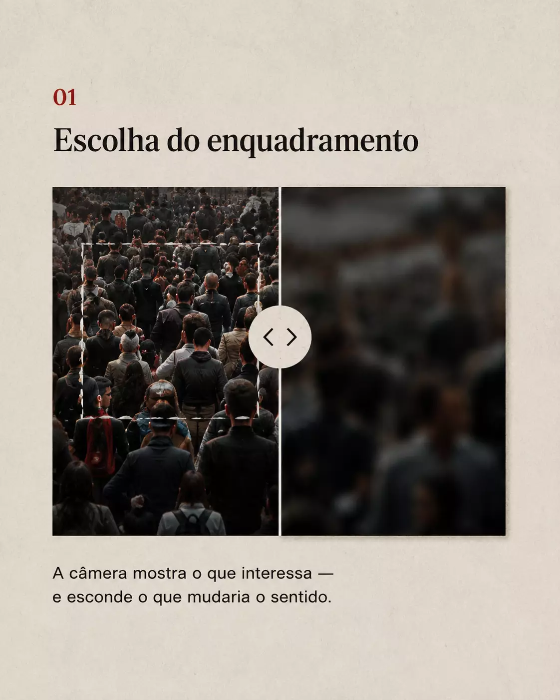
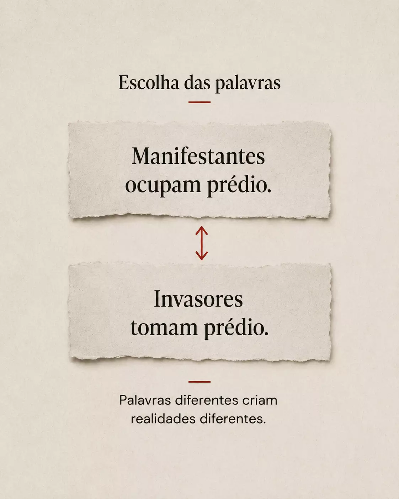
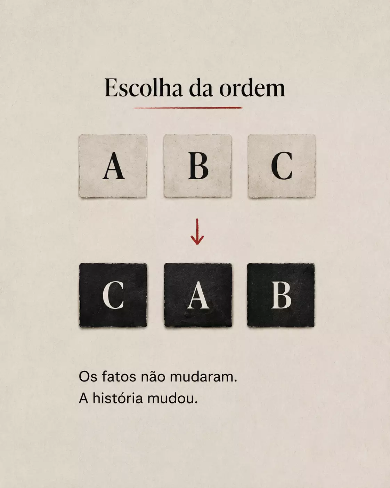
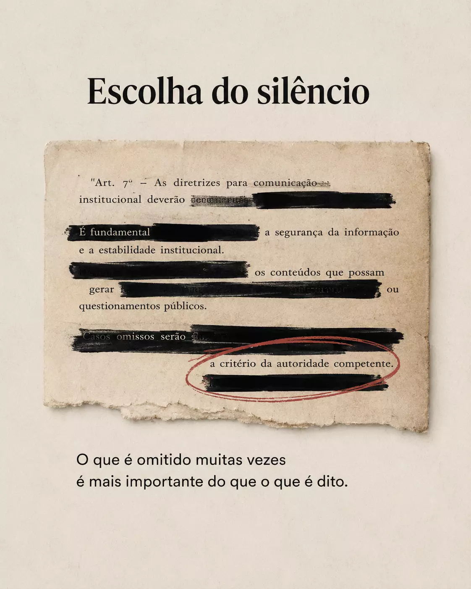

01
Escolha do enquadramento
A câmera mostra o que interessa — e esconde o que mudaria o sentido.
O LADO OBSCURO DA MANIPULAÇÃO
Semiótica, propaganda, mídia e narrativa para entender como constroem a opinião pública — e como você pode enxergar por trás.
COMO FUNCIONA A MANIPULAÇÃO

A câmera mostra o que interessa — e esconde o que mudaria o sentido.

Palavras diferentes criam realidades diferentes.

Os fatos não mudaram. A história mudou.

O que é omitido muitas vezes é mais importante do que o que é dito.
COMO É O CURSO
Cada semana, você aprende um mecanismo e o aplica em casos reais da comunicação, política, mídia e redes sociais.
AULA 1
Semiótica, narrativa, sugestão, enquadramento, propaganda, linguagem, imagem, emoção, construção de sentido e mais.
AULA 2
Análise de campanhas, jornais, discursos, entrevistas, propagandas, redes sociais e outros materiais.
INVESTIMENTO
R$ 497,00QUERO ENTRAR EM TREVAS →Durante o curso, exploramos obras essenciais para entender como linguagem, poder e comunicação constroem a realidade.
VER TODOS OS LIVROS →Como ideias são introduzidas e incorporadas por meio da sugestão, repetição e autoridade.
Como o sistema de mídia pode ser manipulado para fabricar pautas, indignação e relevância.
Linguagem, memória, poder e a disputa pelo direito de definir a realidade.